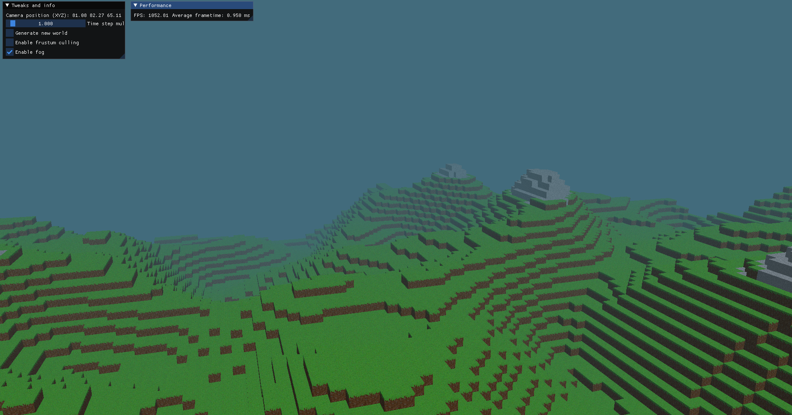
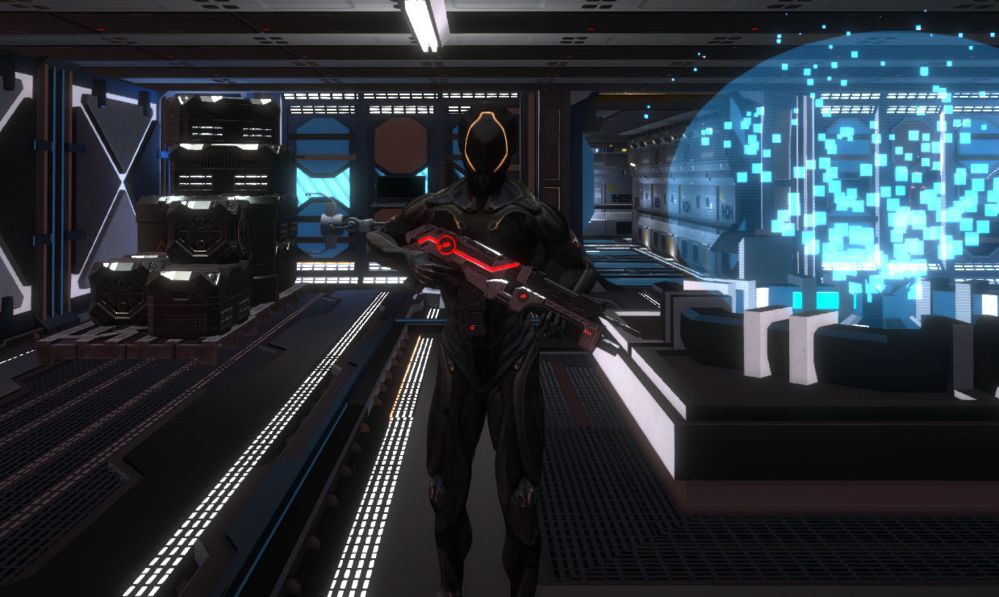
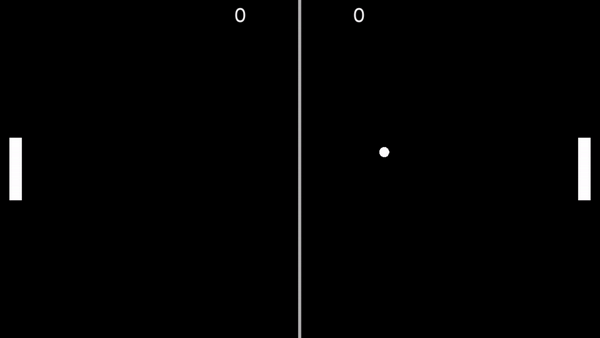

About me
My name is Adi Efendić and I'm currently enrolled as a software engineering student. Ever since I
took this course in my life, programming has evolved into a passion for me. The ability to create
wonderful things and experiences for other people is truly indispensible for me. The journing of
learning this, however, has been the most rewarding of all and it is still not done.
Another thing I'm really passionate about are video games and that passion connected in a beautiful
way with programming. The fact that I can express my creativity and knowledge through an artform
such as game programming is very exciting to me. Another thing I recently picked up is backend development with C#, something I'm still learning
but appreciating at the same time
Of my hobbies, I would first and foremost mention language studying. Whenever possible, I try to
dedicate some of my free time towards learning Japanese and I would say I'm progressing very well.
Besides that, I enjoy reading and playing the guitar casually.
If you wish to see what I'm up to, please check out my work!
Work
Here you can find some of my major works. Make sure to also check out my GitHub directly as I may have other projects there
that don't end up being displayed here!
Wordsmith
Wordsmith is an application I am in the process of developing with a friend from university. It is a university project where we need to
develop a backend API and a Flutter client application for both mobile and desktop devices. The app is envisioned to allow users to sell their own works in eBook format in a marketplace.
Users who buy books can also synchronize them in their own libraries and read them at any moment through the client application. The backend is being written in .NET and utilizes MySQL for
database persistance and RabbitMQ for fast message transfer between the API and our Identity Server. Click here for the API or the
client applications.
glBlocks

glBlocks is something I'm currently still developing with a lot of the work already done. It is a
voxel engine, built with C++ and OpenGL. I read somewhere that voxel engines are a 'baptism of fire'
for many graphics programmers, so I thought it wouldn't hurt to put myself through the same ordeal.
It provided a unique insight for me into graphics programming and has been an invaluable learning
experience. Click here for more info and code!
The Signal

The Signal is a game a classmate and myself made for an annual competition held at our university
(FIT Coding Challenge 2022). We ended up taking 1st place in the game development category, but the
learning experience was way more valuable. We completed it in roughly 2 months during our fourth
semester at university, just in time for the competition that was in June 2022. This was the first
time, for the both of us, that we worked in Unity engine so it was a real challenge to learn all the
concepts and also present a functional game in the specified time. Thankfully, we managed to pull it
off. For my part, I designed the second level of the game, the character animation rigging and
locomotion, weapon fire and damage, camera system, game settings, dynamic music and so on. Click here for more info and code!
glPong

glPong was the first time I actually used OpenGL to create a game. I chose Pong since it is a classic
and also seemed simple enough for a 2D game I was going to build without the help of a game engine.
Although a game with a simple concept, it provided for a really good entry into the world of
graphics programming in a painless way. Click here
for more info and code!
Captioneer
Captioneer is a university project I developed with a couple of friends built
in Angular and .NET. It is a website for downloading and uploading subtitles for movies
and TV shows. It also provides automatic subtitle translation between languages using
Microsoft’s Translation Service and third-party subtitle aggregation from
OpenSubtitles, just to name a few special features. Click here
for more info and code!
Links